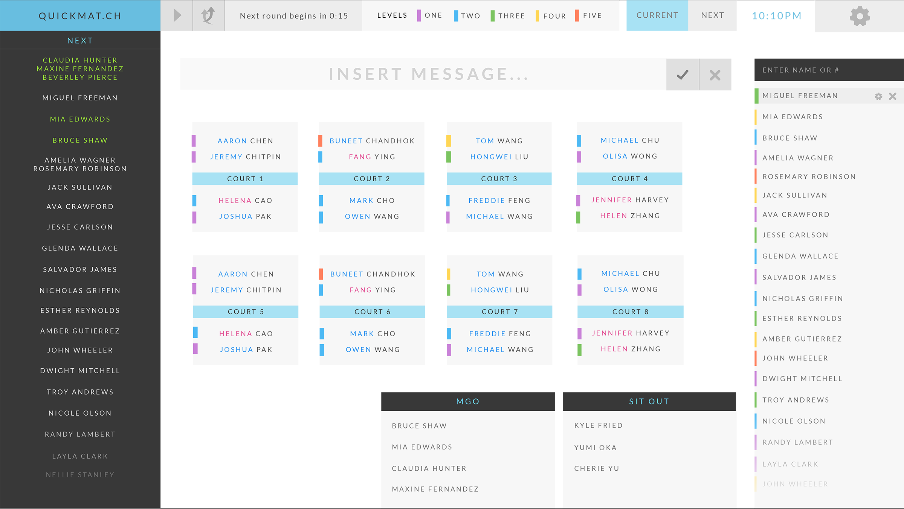

Background
The University of Waterloo Badminton Club (UWBC) hosts regular casual badminton sessions. Every 15 minutes during a session, players are rotated onto courts to play badminton. Players are assigned a level based on their playing skill and may have preferences for singles or doubles games, and players they want to play with. UWBC must ensure players get fair playing time while matching players with similar skill levels together and respecting each player's preferences.
 Photo courtesy of Anthony Chuang, an amazing student photographer
Photo courtesy of Anthony Chuang, an amazing student photographer
In January 2014, I designed the web platform for game matching for a Software Engineering Final Capstone Project which was implemented by four Software Engineering students from the University of Waterloo. In the spring of 2014, the project was displayed and presented at the University of Waterloo Engineering Symposium.
 An Inkling Design Meeting
An Inkling Design Meeting
Problems
Game matching at the UWBC is currently done manually by the club executive members, which is highly prone to human error and bias. The execs have to move name tags on a physical board to indicate which players are playing and which will go next. With 84 players per session, it can be easy to mix up which players have already played. Furthermore, the executive member needs to consciously match players based on equal skill levels.
 An Inkling Design Meeting
An Inkling Design Meeting
Another problem with using a physical board is that at any given time, there are players crowding around the board to check if they are next. A possible problem is that players may knock off other nametags and place themselves on.
In other words, the problems that UWBC face are poor matchmaking & crowding around the screens.
Method
HYPOTHESES
- A customized game-matching algorithm will ensure that all game matches are balanced and that all players will have equal opportunities to play.
- Replacing the physical board with a large screen with a clearer layout will reduce crowding and rigging of the matches.
PROCESS
Idea Generation, Wireframes, Mockups, Graphic Design, Presentation, Poster
Solution
FINAL MOCKUP
In the solution, there are two screens: one is the Admin screen which is viewed on the computer which the executive uses to set up matches, and the Public screen is a viewed on a large monitor that can be viewed by players at a distance.

The Admin Screen for Quickmatch, where executive members make changes to the system.
 The Public Screen for Quickmatch, where everyone views the matching arrangements.
The Public Screen for Quickmatch, where everyone views the matching arrangements.
Quickmatch had been used by the UWBC several times for testing. Overall, it received favourable feedback from the club and the players.
Quickmatch helps organize casual matches based on the following criteria:
- players are around the same skill level
- players get their fair share of playing time
- player preferences are respected, singles or doubles
- fresh match-ups instead of matching the same players every match
FUTURE DIRECTION
The project concluded a while after the University of Waterloo Engineering Symposium and the members graduated from their programs. They are beginning work at various tech companies, and will not have time to continue this project. If we continued working on this project, I would like to collect more user feedback. We were also entertaining the possibility of making a club management system to help clubs keep track of their members and other meaningful information (program of study, student numbers, etc.) We also thought it would be great to make an app where players could get notifications when they were set to play in the next round of matches. We had many ideas, but not enough time to implement all of our ideas.
 The Quickmatch Exhibit at the University of Waterloo Engineering Symposium. I also designed the poster.
The Quickmatch Exhibit at the University of Waterloo Engineering Symposium. I also designed the poster.
REFLECTION
Although I was not formally part of the team (as I am not in their program), I found myself very invested in solving the problem. One main problem that we didnʼt discuss very deeply was the business model to get this project to become more than just a fourth year design project. A few members were interested in continuing development for this project, but could not afford to work on it for free. Although they had some confidence that Quickmatch could become profitable down the road, it might take an exorbitant amount of time and energy to work with the school.